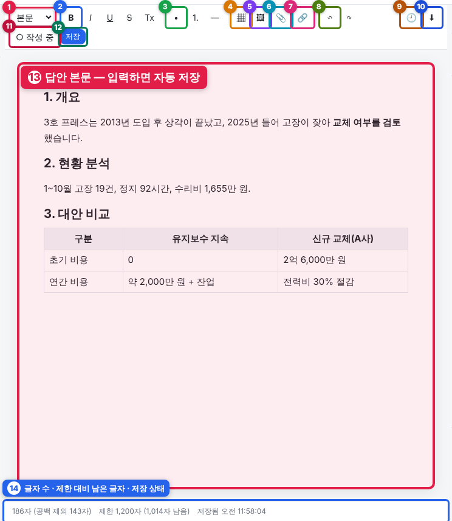
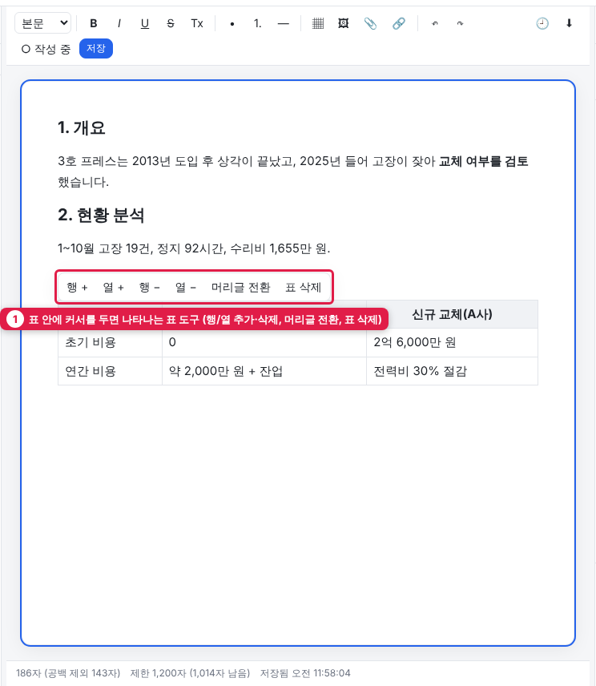
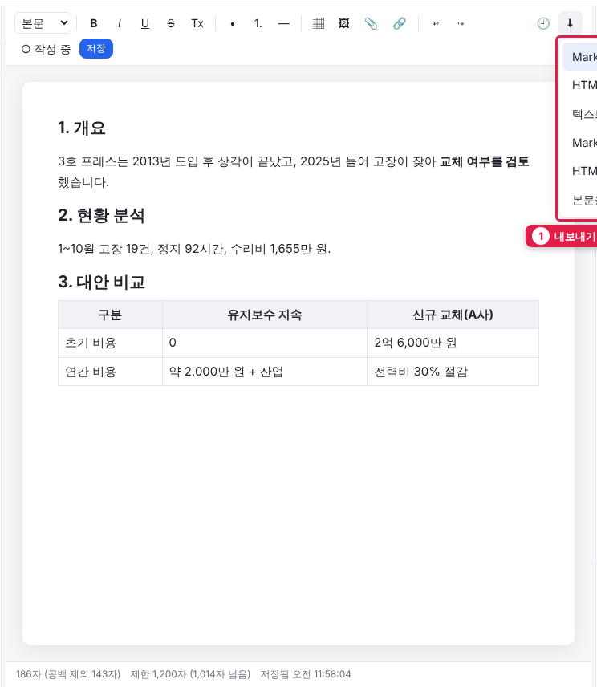
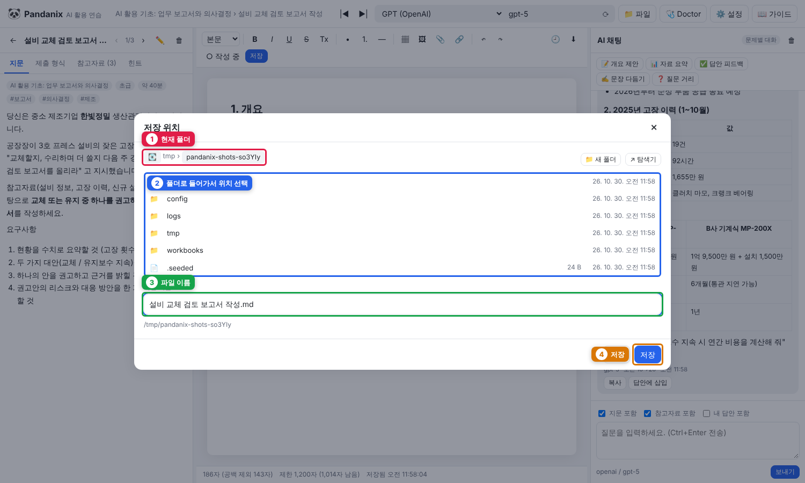
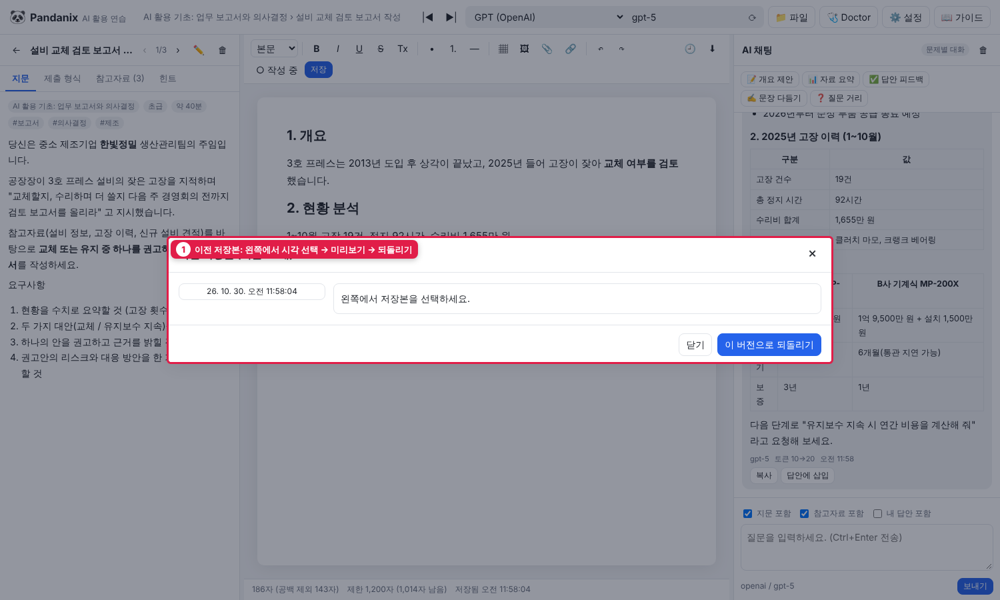

4. 답안 작성 (가운데 에디터)
기본
- 문제를 선택하면 가운데가 그 문제의 답안이 됩니다. 문제마다 따로 저장
- 자동 저장: 입력을 멈추면 1.5초 뒤 저장.
Ctrl+S또는 저장 버튼으로 즉시 저장 - 하단에 글자 수(공백 포함, 괄호 안은 공백 제외), 제한 대비 남은/초과 글자(공백 포함 기준), 마지막 저장 시각 표시
- 자동 저장 간격은 ⚙️ 설정 → 💬 채팅 옵션 → 자동 저장 간격에서 바꿀 수 있습니다
도구 모음

| 번호 | 버튼 | 기능 | 단축키 |
|---|---|---|---|
| 1 | 본문/제목 1~3/인용/코드 | 문단 형식 (현재 문단의 형식이 표시됨) | |
| 2 | B / I / U / S / Tx | 굵게 / 기울임 / 밑줄 / 취소선 / 서식 지우기 | Ctrl+B / Ctrl+I / Ctrl+U |
| 3 | • / 1. / — | 글머리 목록 / 번호 목록 / 구분선 | |
| 4 | ▦ 표 | 격자에서 크기 선택해 표 삽입 | |
| 5 | 🖼 | 이미지 삽입 (답안 폴더에 저장) | |
| 6 | 📎 첨부 | 아무 파일 첨부 → 본문에 링크 칩, 하단에 목록 | |
| 7 | 🔗 | 링크 (본문에서 Ctrl+클릭으로 열기) | |
| 8 | ↶ ↷ | 실행 취소 / 다시 실행 | Ctrl+Z / Y |
| 9 | 🕘 | 이전 저장본 보기·되돌리기 (2분에 1개씩, 최근 20개 보관) | |
| 10 | ⬇ 내보내기 | md / html / txt 다운로드, 로컬 폴더에 저장, 클립보드 복사 | |
| 11 | ○ 작성 중 / ✔ 완료 | 상태 전환 (목록의 점 색) | |
| 12 | 저장 | 즉시 저장 | Ctrl+S |
| 13 | 답안 본문 | 입력하면 자동 저장 | |
| 14 | 상태줄 | 글자 수 · 제한 대비 남은 글자 · 저장 상태 |
화면이 좁으면(1500px 이하) 버튼 글자가 숨고 아이콘만 보입니다. 마우스를 올리면 설명이 나옵니다.
표 다루기

- 표 안에 커서를 두면 표 위에 작은 도구가 뜹니다: 행 + / 열 + / 행 − / 열 − / 머리글 전환 / 표 삭제
- 셀에서
Tab으로 다음 셀,Shift+Tab으로 이전 셀, 마지막 셀에서Tab하면 행 추가 - AI 채팅의 Markdown 표는 답안에 삽입 하면 실제 표로 들어옵니다
- Markdown 표 텍스트를 붙여넣어도 표로 변환됩니다
붙여넣기
- Word/웹에서 복사한 서식은 안전한 범위(제목, 굵게, 목록, 표, 링크)만 유지됩니다
- 이미지를 붙여넣으면 자동 업로드되어 삽입됩니다
단축키
| 키 | 동작 |
|---|---|
| Ctrl+S | 답안 저장 (어디에 포커스가 있어도) |
| Ctrl+B / I / U | 굵게 / 기울임 / 밑줄 |
| Ctrl+Z / Y | 실행 취소 / 다시 실행 (표 행·열 추가/삭제도 되돌릴 수 있음) |
| Tab / Shift+Tab | 표에서 다음/이전 셀, 목록에서 들여쓰기/내어쓰기 |
| Ctrl+\ / Ctrl+/ | 왼쪽 / 오른쪽 패널 접기 (상단바 |◀ ▶| 버튼과 같음) |
서버가 꺼졌을 때
서버 창이 닫히면 화면 위에 빨간 배너가 뜨고 하단에 저장 안 됨 이 표시됩니다. 입력 중인 내용은 브라우저에 임시 보관되며, 서버를 다시 켜면 자동으로 저장됩니다. 탭을 닫았더라도 다음에 같은 문제를 열면 복구할지 묻습니다.
내보내기 위치

- 다운로드: 브라우저 다운로드 폴더
- 로컬 폴더에 저장: 허용된 폴더(7장) 중 선택. 파일명 지정 가능

① 현재 폴더 ② 폴더로 들어가 위치 선택 ③ 파일 이름 ④ 저장
이전 저장본

왼쪽에서 시각을 고르면 오른쪽에 내용이 보이고, "이 버전으로 되돌리기" 로 복원합니다.
저장 위치
data/answers/<문제집id>/<문제id>/
answer.json 현재 답안 (HTML) + 상태
history/*.html 저장본 (2분 간격, 최근 20개)
attachments/ 이미지·첨부
chat.json 이 문제의 AI 대화